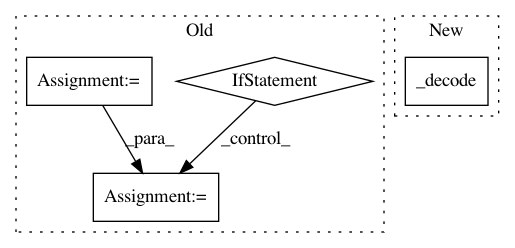

c6e474fb13be0362c6f239f81c128f6d4c751da4,pyannote/audio/labeling/tasks/resegmentation.py,Resegmentation,apply,#Resegmentation#Any#Any#,247
Before Change
labels = batch_generator.specifications["y"]["classes"][1:]
// features sliding window
window = self.feature_extraction.sliding_window
if self.keep_sad:
// sequence of most likely speaker index
// (even when non-speech is the most likely class)
best_speaker_indices = np.argmax(scores[:, 1:], axis=1) + 1
// reconstruct annotation
new_hypothesis = one_hot_decoding(
best_speaker_indices, window, labels=labels)
// revert non-speech regions back to original
speech = hypothesis.get_timeline().support()
new_hypothesis = new_hypothesis.crop(speech)
else:
// sequence of most likely class index (including 0=non-speech)
best_class_indices = np.argmax(scores, axis=1)
// reconstruct annotation
new_hypothesis = one_hot_decoding(
best_class_indices, window, labels=labels)
new_hypothesis.uri = hypothesis.uri
return new_hypothesis
After Change
// speaker labels
labels = batch_generator.specifications["y"]["classes"][1:]
return self._decode(current_file, hypothesis, scores, labels)
class ResegmentationWithOverlap(Resegmentation):
Re-segmentation with overlap
In pattern: SUPERPATTERN
Frequency: 3
Non-data size: 4
Instances
Project Name: pyannote/pyannote-audio
Commit Name: c6e474fb13be0362c6f239f81c128f6d4c751da4
Time: 2019-07-01
Author: bredin@limsi.fr
File Name: pyannote/audio/labeling/tasks/resegmentation.py
Class Name: Resegmentation
Method Name: apply
Project Name: stanfordnlp/stanza
Commit Name: 470326c9a557eeb733d074a6c950f5f966bca030
Time: 2018-06-26
Author: qipeng@noreply.github.com
File Name: utils/conll18_ud_eval.py
Class Name:
Method Name: load_conllu
Project Name: asyml/texar
Commit Name: 133d8b4c1b22c639359202ba55d828bed7ddff47
Time: 2018-05-03
Author: zhitinghu@gmail.com
File Name: texar/modules/decoders/beam_search_decode.py
Class Name:
Method Name: beam_search_decode